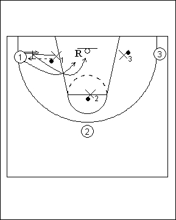

Catégorie : REBOND (Reb-08)
Déroulement
- Les joueurs sont par groupes de deux le long de la ligne des trois points. Un ballon dans chaque groupe.
- X1 passe son ballon à l’attaquant qui prend un shoot immédiat. Les deux joueurs jouent le rebond. Si l’attaquant marque le panier ou gagne le rebond, il restera en attaque. Si le défenseur gagne le rebond, ce sera lui le futur attaquant.
- Ce sera ensuite au tour de l’attaquant 2 et de X2, puis de l’attaquant 3 et de X3.
Coaching points
- On travaille évidemment de préférence sur les deux panneaux.
- En fonction du nombre de joueurs, on augmente ou diminue le nombre de groupes de deux à chaque panneau.
- Si le rebond offensif est gagné on peut demander de jouer le un contre un à fond.
- Après un certain nombre de shoots ou un certain temps, on modifie les emplacements de shoots.